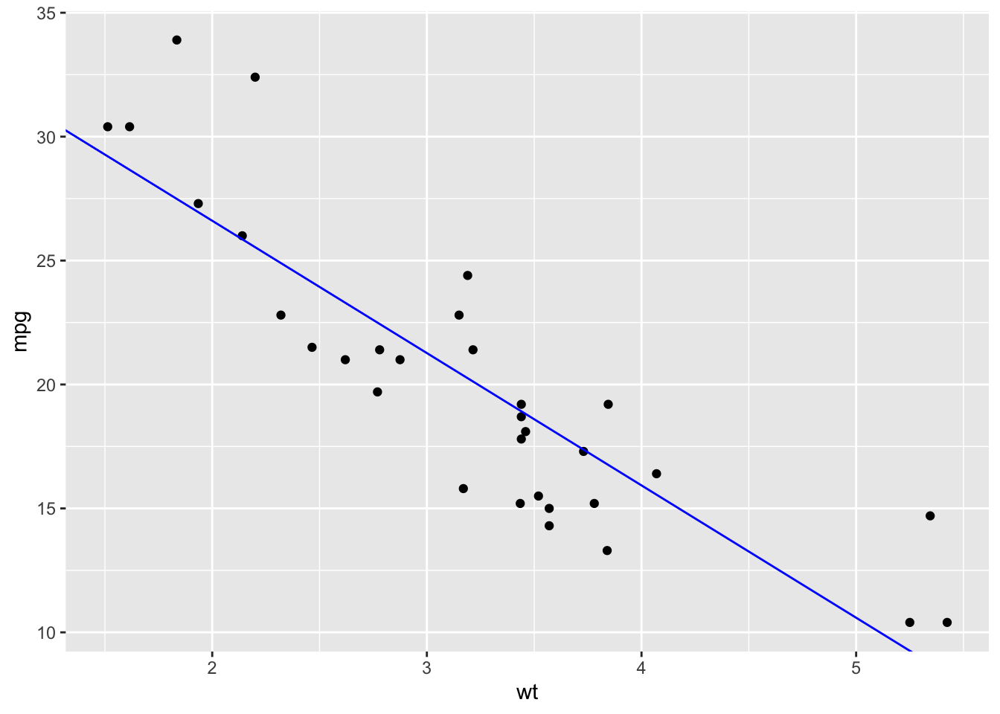
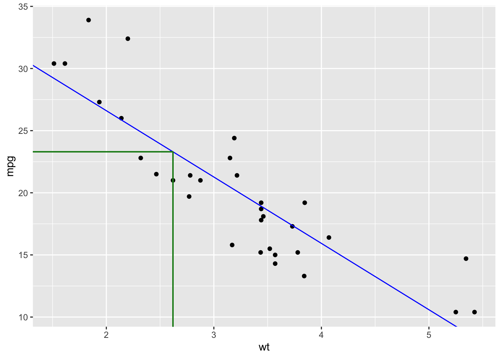
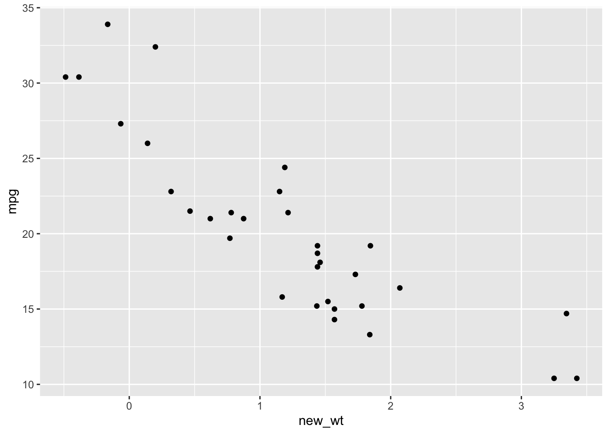
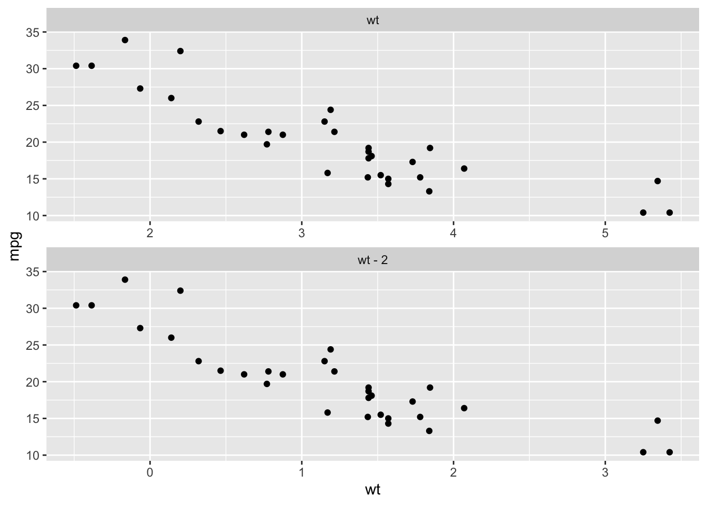
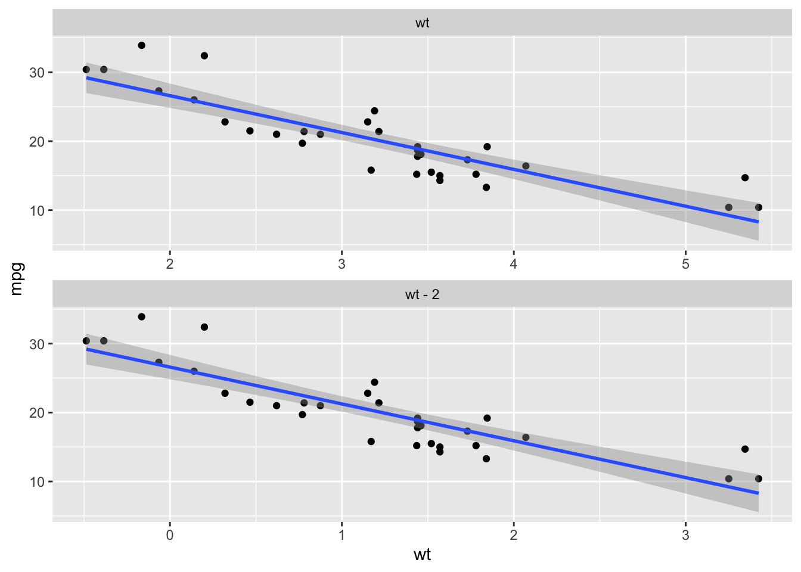
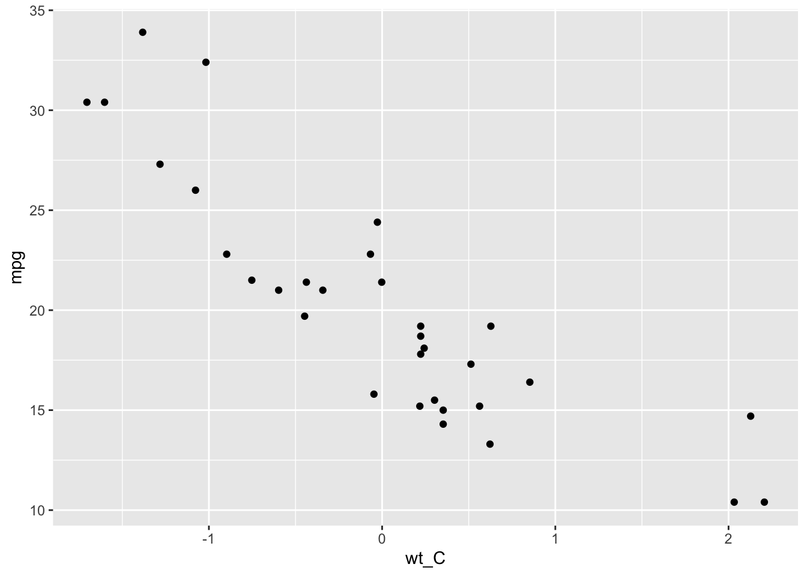

Chapter 3 Regression
You likely have seen some regerssion models. This following tutorial focuses on interpretation of each element in a regession that will be important later for moderation or mediation analyses.
3.1 What Is Regression?
As a simple example, consider the mtcars dataset. We might be interested in relating two variables, say, the weight of the car in tons and the fuel efficiency in miles per gallon (mpg). The most familiar way to perform this analysis is with Pearsion’s correlation, but it turns out that using regression is totally equivalent. Here’s the code for running that regression in R and seeing the result.
# I'm making a variable to hold the output of the regression; you should always
# name your variables something informative; if you copy this code, change that
# variable name!
efficiencyModel = lm(
mpg ~ wt, # specify the model.
data = mtcars # specify the dataframe that we want to use
)
# now view the result
lmSummary(efficiencyModel)##
## Call:
## lm(formula = mpg ~ wt, data = mtcars)
##
## Residuals:
## Min 1Q Median 3Q Max
## -4.5432 -2.3647 -0.1252 1.4096 6.8727
##
## Coefficients:
## Estimate Std. Error t value f value R^2 Pr(>|t|)
## (Intercept) 37.2851 1.8776 19.8576 394.3233 0.929 < 2e-16 ***
## wt -5.3445 0.5591 -9.5590 91.3753 0.753 1.29e-10 ***
## ---
## Signif. codes: 0 '***' 0.001 '**' 0.01 '*' 0.05 '.' 0.1 ' ' 1
##
## Residual standard error: 3.046 on 30 degrees of freedom
## Multiple R-squared: 0.7528, Adjusted R-squared: 0.7446
## F-statistic: 91.38 on 1 and 30 DF, p-value: 1.294e-10mtcars is a toy dataset that is loaded in R’s environment by default. You can look its information by using R help: ?mtcars
Before I explain what’s going on, I’ll provide a write up of these results. Skim it over and try to get the main gist. By the end of this chapter, we hope to make sense of each piece.
Car efficiency was regressed on car weight to examine the relationship between mass and fuel use. A significant, inverse relationship between efficiency and weight emerged, \(b = -5.345, F(1,30) = 91.38, p < .001\).
Note that the term “significant” here is used differently than its collquial meaning. What that really means in the write up above is “statistically reliable.” We’ll explore that more later.
Returning to the output,what does it all mean? The model that R estimated for us is actually this:
\[\widehat{mpg_i} = 37.29 - 5.34 * wt_i\]
We can see our two variables, mpg and wt, in that equation. Notice that each of them has a subscript, i. This shows the fact that we are using data from every single person. We can choose i to represent any given car in the mtcars dataset and apply our equation. Another notable feature is the hat over the mpg variable. That hat represents the fact that we are predicting, or making a guess, for each car’s MPG value via this equation. Finally, there are two number, 37.29 and -5.34. These come from the regression output above. Notice the numbers under the heading, “Estimate” in the table in the middle of the ouptut. One is labelled “Intercept,” and the other “wt.”
Let’s see what these guesses turn out to be. I’m going to apply this equation to the first several rows in the mtcars dataset. Here are the values we are starting with:
mpg | wt |
|---|---|
21.0 | 2.620 |
21.0 | 2.875 |
22.8 | 2.320 |
21.4 | 3.215 |
18.7 | 3.440 |
18.1 | 3.460 |
Let’s use our equation on the very first row. We simply substitute the values in that row for the placeholders in the equation above:
\[\widehat{mpg_1} = 37.29 - 5.34 * 2.62 = 23.2992\]
Remember, the \(\widehat{mpg_1}\) is a predicted mpg, so we do not substitute there. Notice that I replaced the i with a 1 because we are applying our model to the first car in the dataset. We get a prediction of 23.2992 MPG. The actual MPG is listed in the table above as 21.0, so we are off by a little bit. But that’s ok because we are using our regression to summarize this information, not get every number exactly right.
I can repeat this process for every car in the dataset. Here’s what the first few cars predictions look like:
mtcars %>%
select(mpg, wt) %>%
head() %>%
mutate(
# calculate our predictions
`mpg_hat` = 37.29 - 5.34 * wt
) %>%
flextable() %>%
colformat_double(j = 'mpg_hat', digits = 3)mpg | wt | mpg_hat |
|---|---|---|
21.0 | 2.620 | 23.299 |
21.0 | 2.875 | 21.938 |
22.8 | 2.320 | 24.901 |
21.4 | 3.215 | 20.122 |
18.7 | 3.440 | 18.920 |
18.1 | 3.460 | 18.814 |
We know that we can use our equation to calculated estimated mpg values for each car. But why would we do that? Well, we don’t often need the exact predictions. But it is useful to know that the model is trying to do this. Let’s represent the model graphically.
wt_mpg_plot = mtcars %>%
ggplot(
aes(x = wt, y = mpg)
) +
geom_point() + # add points for each actual car
# add a line with values that are suspiciously familiar:
geom_abline(
intercept = 37.29,
slope = -5.34,
color = 'blue'
)
wt_mpg_plot
We have exact analogs of everything in the tables above. Each point represents a car’s weight on the x axis, and its efficiency in MPG on the y axis. Finally, the line represents those predicts from before. If you take a particular car’s weight and find the spot directly above it on the blue line, the place on the y-axis directly to the left of the line will be the prediction for that car. I’ll mark that on the next graph for the first car in our dataset.
# just adding elements to the same plot we had before
wt_mpg_plot +
geom_segment(
x = 2.62, # the weight of the first car
xend = 2.62, # repeat it to make the function happy
y = 0, yend = 23.2992,
color = 'forestgreen'
) +
# add the horizontal line;
geom_segment(
x = 0,
xend = 2.62,
y = 23.2992, yend = 23.2992, # the prediction for mpg
color = 'forestgreen'
)
Notice that the vertical green line passes right through the point for the first car in our dataset. If we follow the horizontal green line from its intersection with the blue line, we end up at our prediction for the first car.
The takeaway here is that we can understand our model as describing predictions for each car in the dataset using just two numbers. I’m going to formally give these names and interpretations now:
- The intercept tells us the predicted efficiency of a car that has a weight of zero.
- The slope tells us how much we expect efficiency to change for a 1-ton weight difference.
These interpretations are critical. We’ll grapple with them more soon, but for now, I’ll repeat them in more general language. These two things should become mantras for you as you interpret regressions:
- The intercept is the predicted value of an outcome for those cases with a value of zero on all predictors.
- The slope is the predicted change in the value of the outcome for a 1 unit change in the value of its predictor.
And finally, one more time, very concretely with the mtcars dataset:
- Our intercept of 37.29 is the predicted efficiency, in miles per gallon, of a car that weighs 0 tons. Obviously a car can’t weigh zero tons, so this value is not particularly meaningful for us in this model. We will change that soon.
- The slope of -5.34 tells us that if car B weighs 1 ton more than car A, car B is predicted to have an efficiency of 5.34 mpg less than car A. There is a negative relationship between car weight and car efficiency in this sample.
Now that we have interpretations of these pieces of the model, let’s look at some of the other pieces of the output.
3.2 Intepreting Regression Output
Here’s the output again.
lmSummary(efficiencyModel)##
## Call:
## lm(formula = mpg ~ wt, data = mtcars)
##
## Residuals:
## Min 1Q Median 3Q Max
## -4.5432 -2.3647 -0.1252 1.4096 6.8727
##
## Coefficients:
## Estimate Std. Error t value f value R^2 Pr(>|t|)
## (Intercept) 37.2851 1.8776 19.8576 394.3233 0.929 < 2e-16 ***
## wt -5.3445 0.5591 -9.5590 91.3753 0.753 1.29e-10 ***
## ---
## Signif. codes: 0 '***' 0.001 '**' 0.01 '*' 0.05 '.' 0.1 ' ' 1
##
## Residual standard error: 3.046 on 30 degrees of freedom
## Multiple R-squared: 0.7528, Adjusted R-squared: 0.7446
## F-statistic: 91.38 on 1 and 30 DF, p-value: 1.294e-10We’ve looked at the “Estimate” column and now know that those values describe a set of predictions using an intercept and a slope. Let’s take a look at two other columns that will be useful for us.
The first is labelled “f value.” Describing the precise meaning of F is outside the scope of this article, but know that it indexes the statistical precision that our model brings. Remember how our model’s predictions were never precisely the real values? F is one way of understanding something about how accurate1 those predictions were, taking into account model complexity. Larger F values mean our model was more accurate. Values of around 3 or 4 are usually statistically significant, though that depends somewhat on sample size. Our F of more than 90 in this case tells us that we have a model that is quite good, at least in an inferential sense. We derive confidence2 in the fact that we have a negative relationship between efficiency and weight.
The second column we examine is labelled “Pr(>|t|)” which is a mathematical way of saying “p value.” I am not going to reiterate the null hypothesis statistical test framework here. Instead, I’ll refer you to the another explanation of this if you want the in depth look.
In the meantime, let me give you interpretations of p that are correct, and those that are not. Here are good ways to describe p:
- Our low p-value of less than .001 indicates that under a null hypothesis of no association between efficiency and car weight, it is unlikely that we would see a set of cars that look this way from sampling error alone.
- Consider a hypothetical world in which the correlation between MPG and car weight was 0. That is, if we could measure all existing cars’ weights and efficiencies, we would see no indication of a relationship between those two variables. In this hypothetical world, it’s unlikely that we would get a set of cars showing the negative association if we randomly sampled just 32 cars. Because there’s a low chance of that happening (p<.001), we might assume that we are not in the hypothetical world with no association; the only possibility left is that we are in a world where there is a relationship bewteen efficiency and weight.
Here’s some ways that people commonly describe p values, but they are not totally accurate. The incorrect statement is italicized, and then my explanation is in normal font.
- Our low p value indicates that there’s a low chance that our F value is due to random chance. This is accurate only if you mean “sampling error under the null hypothesis” when you say “random chance.” But “random chance” could mean a lot of things, so I don’t love it.
- The p value is the probability that our data are random. In a strict sense, all data in a sample are random as long as the sampling procedure had some element of randomness to it. And for an accurate study, randomness is essential. If we don’t randomly sample, then we cannot have confidence that our result generalizes. But now we’re deep in the weeds of generalizability theory, and we don’t need to stay here. Basically, this way of describing a p value is not right.
Ok, so what should you do with p values? Revist my write up above. By convention, we simply note whether p is less than .05. If so, we consider ourselve to have “enough evidence” that we conclude an effect. If not, we are still in the dark; our study was not precise enough to speak to the reality.
3.3 Centering
We know now that the intercept is the predicted value when the other predictor is zero. Wouldn’t it be nice if we had a way to make “0” a meaningful value? Enter variable centering.
Consider our plot from before, without the line.
mtcars %>%
ggplot(
aes(x = wt, y = mpg)
) +
geom_point()
Zero does not even appear on the x axis because there are no cars with a weight of zero. But watch what happens when I subtract a constant from wt:
mtcars %>%
mutate(
new_wt = wt - 2 # subtract a constant, 2, from wt
) %>%
ggplot(
aes(x = new_wt, y = mpg)
) +
geom_point()
Visually, it looks identical if you ignore the x axis. But comparing the x axis, there is a big difference. Let’s put them side by side so we can see it:
bind_rows(
mtcars %>% mutate(panel="wt"),
mtcars %>% mutate(wt = wt - 2, panel="wt - 2")
) %>%
ggplot(
aes(x = wt, y = mpg)
) +
geom_point()+
facet_wrap(
vars(panel),
nrow = 2,
scale = "free_x"
)
The x-axis has shifted, but the relative position of points is identical in the two plots. This is an important feature! Notice what happens when we draw a line through those two plots. I will use a slightly different method here, but the line will appear the same as above:
bind_rows(
mtcars %>% mutate(panel="wt"),
mtcars %>% mutate(wt = wt - 2, panel="wt - 2")
) %>%
ggplot(
aes(x = wt, y = mpg)
) +
geom_point() +
geom_smooth(method="lm") +
facet_wrap(
vars(panel),
nrow = 2,
scale = "free_x"
)## `geom_smooth()` using formula = 'y ~ x'
Just like the data points, the line looks identical! The only difference is the placement of the x-axis. The axis has been shifted to the right in the wt-2 plot relative to the wt plot.
Recall that the relationship between efficiency and weight is estimated in the slope. This is key; we centered our variable by subtracting a constant, but the slope of the best-fit line remains unchanged. That is, we can assess the relationship between our variables in exactly the same way as before, by examining the slope.
The final feature of this shift that is critical for our purpose is the way we control the zero point of the axis. Notice that the value 2 in the original wt data aligns with the new wt-2 data value of 0. This is not a coincidence. We subtracted 2, and our new data now has a value of 0 at what use to be 2. In fact, we can intentionally alter where zero lands in our data by subtracting the number we want represented by 0.
For example, a very interesting value that we will often subtract is the mean of the data we are centering. This strategy is known as mean centering a variable. We will rely on this extensively in the next chapter, so it is worth understanding!
To mean-center our weight variable, we can simply do this:
# Create a new dataframe called mtcars_2 that we can use
# later.
mtcars_2 = mtcars %>%
mutate(
wt_C = wt - mean(wt) # mean center weight
)The expression mean(wt) results in the mean of all weights in the dataset, that is, it results in a constant value. That constant in our case is 3.217. Let’s graph our values as before.
mtcars_2 %>%
ggplot(
aes(x = wt_C, y = mpg) # use the centered weight variable.
) +
geom_point()
As we have come to expect, the relative position of points remains identical, but 0 falls in a new spot on our x axis. Refer to the earlier plots and you can see that 0 is where the mean, 3.217, used to be.
3.4 Interpreting Regression with Mean-Centered Predictors
Let’s run a regression and use the tools of interpretation we developed earlier.
efficiencyModelWtC <- lm(
mpg ~ wt_C,
data = mtcars_2
)
lmSummary(efficiencyModelWtC)##
## Call:
## lm(formula = mpg ~ wt_C, data = mtcars_2)
##
## Residuals:
## Min 1Q Median 3Q Max
## -4.5432 -2.3647 -0.1252 1.4096 6.8727
##
## Coefficients:
## Estimate Std. Error t value f value R^2 Pr(>|t|)
## (Intercept) 20.0906 0.5384 37.3126 1392.2290 0.979 < 2e-16 ***
## wt_C -5.3445 0.5591 -9.5590 91.3753 0.753 1.29e-10 ***
## ---
## Signif. codes: 0 '***' 0.001 '**' 0.01 '*' 0.05 '.' 0.1 ' ' 1
##
## Residual standard error: 3.046 on 30 degrees of freedom
## Multiple R-squared: 0.7528, Adjusted R-squared: 0.7446
## F-statistic: 91.38 on 1 and 30 DF, p-value: 1.294e-10Our syntax did not change at all except to use our new wt_C variable, and our new mtcars_2 dataframe. As you might have suspected, the slope is identical to our original model at -5.3445. The F value is also identical at 91.38. The parameters that characterize the relationship between our two variables have remained exactly as they were before, further increasing our confidence that centering our weight variable still allows us to see that a 1 ton difference between two cars results in a prediction of 5.345 fewer MPGs in the heavier car than in the lighter one.
However, the intercept has changed; it is now 20.091. If we apply our rules of interpretation, we have this:
Cars with 0 on the wt_C variable are predicted to have an efficiency of 20.091 MPG.
What kind of car has a value of 0 on wt_C? We know that shifting our x axis allowed use to place 0 on our new variable at the mean of wt in our original variable. That is, the kind of car that has 0 on wt_C is a car with exactly average weight. We may or may not have an actual car in our dataset that weighs exactly the mean of all other cars, but we are in the business of prediction, so that is ok. Let’s rephrase our interpretation to reflect this fact:
A car of average weight is predicted to have an efficiency of 20.091 MPG.
Recall that the statistical test of the intercept tests whether or not that value, regardless of its interpretability, is different from zero or not. The F value is 1392.23, with a p value of less than .001. As a result, we conclude that our MPG prediction for a car of average weight is reliably different from zero in the population of cars that mtcars sampled from.
One final connection. Our intercept is now estimated as exactly the mean MPG in our dataset:
mean(mtcars$mpg)## [1] 20.09062If all predictors in a regression are mean-centered, then the intercept necessarily reflects the mean of the outcome variable. In the case of the cars dataset, the statistical conclusion yeilded from this test is a bit obvious: the cars weigh more than zero, on average. However, there are many psychological outcomes where we care very much about whether the average of the outcome deviates from zero. We will see an example where this is one of our critical tests in the next chapter.
In general, mean-centering predictors usually has no downside.3 If all predictors in a regression4 are mean-centered, then the intercept becomes much more interpretable, usually.
3.5 Chapter Takeaways
- Regression with a single predictor characterizes a dataset by estimating a slope and intercept. These describe a line which can be understood as the model’s predictions for each datapoint and other, hypothetical, datapoints that we did not observe.
- The slope is always interpreted as the predicted increase in the outcome variable for a 1-unit increase in the predictor variable.
- The intercept is always interpreted as the average value of the outcome variable for a datapoint with a value of zero on the predictor variable(s).
- For our purposes here, we compare the p value to .05. If it is less than .05, we understand that our data (or more extreme data) were unlikely to occur in a hypothetical world where no effect (no relationship for a slope, and the average is not different from zero for an intercept) exists.
- We derive our p value from the F value, which indexes the “accuracy” of our model’s predictions. Usually an F of 3 to 4 is enough to be significant, but this depends on sample size.
- We can choose where zero on our predictor variable lands by centering. Mean centering is usually a useful choice. This might help use interpret our intercept as the mean value of our outcome variable. It can be useful to test this mean value against zero.
Sort of. Really, it is a measure of how much variation we accounted for in our model as compared to a simpler model, e.g., one which sets the slope to zero. So really, it is an index of how much better our model is than one where we don’t try to use the statistic of interest. This gets to be a deep, and sometimes controversial, topic. The description here is intended to give you an intuitive sense of what’s going on. For data analysis in a professional capacity, it is important to get familiar with null hypothesis statistical testing, its philosophy, and alternatives like Bayesian analysis.↩︎
Again, this is an intuitive explanation that sacrifices a lot of nuance and meaning in service of getting off the ground quickly. Confidence is a slippery term, and it is probably not true that we can quantify our confidence in the framework of null hypothesis tests, like the F statistic. But many people still use and expect this statistic to index confidence, and in a practical sense it probably does ok.↩︎
At least, there is no downside in the kind of models we are discussing here. For more advanced models, like logistic regression or multilevel modeling, great care must be taken in centering.↩︎
We can certainly have more than one predictor in a regression. You may have encountered this as multiple regression. We will rely on mutliple regression techniques later for both moderation and mediation.↩︎